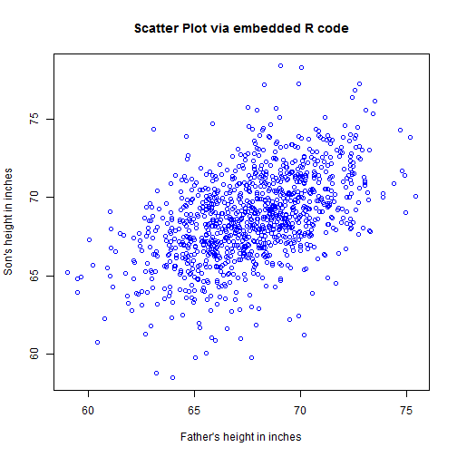

This application requires the UsingR and shiny Packages. It makes an interactive plot of the father.son data in the UsingR package. It has been deployed at: https://cwc4shinyapps.shinyapps.io/Project
The application initiates with a scatter plot. Users are allowed to
1. Add or Remove the linear regression line
2. Add or Remove user defined line with adjustable intercept and slope.
3. R squared value of each line is shown as each line is added on the plot
plot(father.son$fheight, father.son$sheight, col = "blue", xlab = "Father's height in inches",
ylab = "Son's height in inches", main = "Scatter Plot via embedded R code")

Main Points
The R squared value of the linear regreaaion is larger than that of any other straight line.